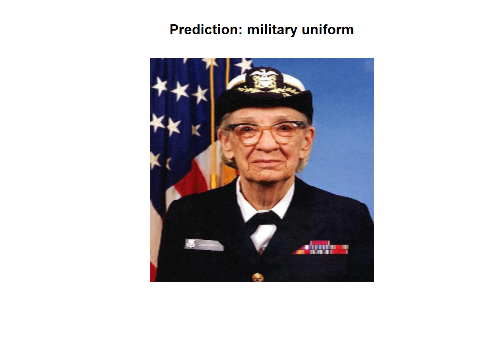
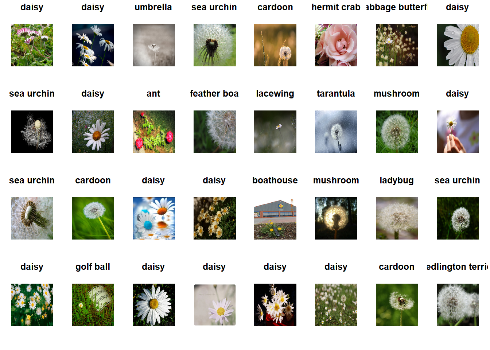

Chapter 5 Transfer learning
https://towardsdatascience.com/transfer-learning-from-pre-trained-models-f2393f124751 https://keras.io/applications/#available-models
5.1 Introduction
5.1.1 What is Transfer Learning
Transfer learning is a machine learning technique where a model trained on one task is re-purposed on a second related task. In transfer learning, we first train a base network on a base dataset and task, and then we repurpose the learned features, or transfer them, to a second target network to be trained on a target dataset and task. This process will tend to work if the features are general, meaning suitable to both base and target tasks, instead of specific to the base task.
5.1.2 What is TensforFlow Hub
TensorFlow Hub is a library for the publication, discovery, and consumption of reusable parts of machine learning models. A module is a self-contained piece of a TensorFlow graph, along with its weights and assets, that can be reused across different tasks in a process known as transfer learning. Transfer learning can:
- Train a model with a smaller dataset,
- Improve generalization, and
- Speed up training.
5.2 Transfer learning with TensforFlow Hub
We load necessary packages
5.2.1 ImageNet classifier
5.2.1.1 Download the classifier
we can use layer_hub to load a mobilenet and wrap it as a keras layer. We have to select one classifier URL from (tfhub.dev)[https://tfhub.dev/].
5.2.1.2 Run the classifier on one image
In order to verify the classifier, we can run it on a single image
# we download an image
image_url <- "https://storage.googleapis.com/download.tensorflow.org/example_images/grace_hopper.jpg"
img <- pins::pin(image_url, name = "grace_hopper") %>%
tensorflow::tf$io$read_file() %>%
tensorflow::tf$image$decode_image(dtype = tf$float32) %>%
tensorflow::tf$image$resize(size = image_shape[-3])we can plot the image
We add a batch dimension and pass the image to the model.
## tf.Tensor(
## [[ 0.18970814 1.2320935 0.00924352 ... 0.46654856 -0.43308693
## 0.07141374]], shape=(1, 1001), dtype=float32)The result consists on a 1001 element vector of logits, rating the probability of each class for the ilages. We use argmax in order to find the top class ID.
## [1] 6535.2.1.3 Decode the prediction
The classifier predicted that our image belong to the class of ID: 653. We need to identify the label corresponding to this class in the ImageNet data.
# we download the labels
labels_url <- "https://storage.googleapis.com/download.tensorflow.org/data/ImageNetLabels.txt"
imagenet_labels <- pins::pin(labels_url, "imagenet_labels") %>%
readLines()We will plot the image with the label corresponding to teh predicted class
img %>%
as.array() %>%
as.raster() %>%
plot()
#
title(paste("Prediction:" , imagenet_labels[predicted_class + 1]))
5.2.2 Transfer learning
With the use of TF Hub we can retrain the top layer of the model to recognize the classes in our dataset
We can use image_data_generator to load this data into our model.
Since TensorFlow Hub’s image modules used float inputs that range between 0 and 1, we have to rescale our images using image_data_generator
image_generator <- image_data_generator(rescale=1/255)
image_data <- flowers[1] %>%
dirname() %>%
dirname() %>%
flow_images_from_directory(image_generator, target_size = image_shape[-3])The reulting object is an iterator that returns image_batch, label_batch pairs. We can iterate over it using the iter_nex function.
## List of 2
## $ : num [1:32, 1:224, 1:224, 1:3] 0.0157 0.2118 0.1373 0 0.9608 ...
## $ : num [1:32, 1:3] 1 0 0 1 0 0 1 0 1 0 ...5.2.3 Run the classifier on a batch of images
image_batch <- reticulate::iter_next(image_data)
predictions <- classifier(tf$constant(image_batch[[1]], tf$float32))
predicted_classnames <- imagenet_labels[as.integer(tf$argmax(predictions, axis = 1L) + 1L)]We can plot the predicted classes with the images in order to evaluate the classifier performance
par(mfcol = c(4,8), mar = rep(1, 4), oma = rep(0.2, 4))
image_batch[[1]] %>%
purrr::array_tree(1) %>%
purrr::set_names(predicted_classnames) %>%
purrr::map(as.raster) %>%
purrr::iwalk(~{plot(.x); title(.y)})
5.2.4 Download a headless model
In TensorFlow Hub we can use models without the top classification layer.
We create a festure extractor
It returns a 1280 length vector for each image
## tf.Tensor(
## [[0.0000000e+00 1.7376544e+00 4.6723327e-03 ... 2.1834779e-01
## 0.0000000e+00 4.9047664e-02]
## [7.7801757e-02 2.2452796e+00 0.0000000e+00 ... 0.0000000e+00
## 0.0000000e+00 0.0000000e+00]
## [0.0000000e+00 6.9158578e-01 0.0000000e+00 ... 5.0055329e-02
## 0.0000000e+00 5.1555908e-01]
## ...
## [4.9063761e-02 1.2936193e+00 1.4952968e-01 ... 7.8607094e-04
## 2.3129751e-01 2.9109207e-01]
## [0.0000000e+00 0.0000000e+00 0.0000000e+00 ... 0.0000000e+00
## 0.0000000e+00 1.2216148e-01]
## [2.7850335e-02 8.8660502e-01 1.8906282e-02 ... 2.9068547e-01
## 0.0000000e+00 0.0000000e+00]], shape=(32, 1280), dtype=float32)Freeze the variables in the feature extractor layer, so that the training only modifies the new classifier layer.
5.2.5 Attach a classification head
Now let’s create a sequential model using the feature extraction layer and add a new classification layer.
model <- keras_model_sequential(list(
feature_extractor_layer,
layer_dense(units = image_data$num_classes, activation='softmax')
))
summary(model)## Model: "sequential_5"
## ________________________________________________________________________________
## Layer (type) Output Shape Param #
## ================================================================================
## keras_layer_1 (KerasLayer) (None, 1280) 2257984
## ________________________________________________________________________________
## dense_14 (Dense) (None, 3) 3843
## ================================================================================
## Total params: 2,261,827
## Trainable params: 3,843
## Non-trainable params: 2,257,984
## ________________________________________________________________________________5.2.6 Train the model
Use compile to configure the training process:
Now we use the fit method to train the model
history <- model %>% fit_generator(
image_data, epochs=5,
steps_per_epoch = image_data$n / image_data$batch_size,
verbose = 2
)Now just after 2 iterations we can see that the model is maing progress in the classification performance.
5.2.7 Export the model
Now we can save our trained model
Now confirm that we can reload it, and it still gives the same results:
x <- tf$constant(image_batch[[1]], tf$float32)
all.equal(
as.matrix(model(x)),
as.matrix(model_(x))
)## [1] TRUE5.3 Transfer learning using a pretrained CONVNET
5.3.1 feature extraction
Feature extraction consits of using the representations learned by a trained network to extract interesting features from new samples. These features are then used in anew classifier trained from scratch. For convnets models, fature extraction consists of taking the convolution base of a previously trained network, running the new data through it, and training a new classifier on top of the output. We reuse the convolution base because it is likely to be more generic compared to the representations learned by the classifier that are largely depending on the set of classes used for training. The level og generality of the representations extracted by specific convolution layers depends on the depth of the layer in the model. Layers that come earlier in the model extract local, highly generic feature maps (such as visual edges, colors, and textures), wheras layers that are higher up extract more abstract concepts (such as “cat ear” or “dog eye”). So our new dataset differs a lot from the dataset on which the original model was trained, it would be better to use only the first new layers of the model for feature extraction instead of using the hwole convolutional base.
In this example, we will use the VGG16 network, trained on ImageNet data. There are sevral image-classificationtrained models on Imagenet data: Xception, Inception V3, ResNet50, VGG16, VGG19, MobileNet…
conv_base = application_vgg16(
weights = "imagenet",
include_top = FALSE, #including or not the densly connected classifier on top of the network.
input_shape = c(150,150,3)
)
conv_base## Model
## Model: "vgg16"
## ________________________________________________________________________________
## Layer (type) Output Shape Param #
## ================================================================================
## input_2 (InputLayer) [(None, 150, 150, 3)] 0
## ________________________________________________________________________________
## block1_conv1 (Conv2D) (None, 150, 150, 64) 1792
## ________________________________________________________________________________
## block1_conv2 (Conv2D) (None, 150, 150, 64) 36928
## ________________________________________________________________________________
## block1_pool (MaxPooling2D) (None, 75, 75, 64) 0
## ________________________________________________________________________________
## block2_conv1 (Conv2D) (None, 75, 75, 128) 73856
## ________________________________________________________________________________
## block2_conv2 (Conv2D) (None, 75, 75, 128) 147584
## ________________________________________________________________________________
## block2_pool (MaxPooling2D) (None, 37, 37, 128) 0
## ________________________________________________________________________________
## block3_conv1 (Conv2D) (None, 37, 37, 256) 295168
## ________________________________________________________________________________
## block3_conv2 (Conv2D) (None, 37, 37, 256) 590080
## ________________________________________________________________________________
## block3_conv3 (Conv2D) (None, 37, 37, 256) 590080
## ________________________________________________________________________________
## block3_pool (MaxPooling2D) (None, 18, 18, 256) 0
## ________________________________________________________________________________
## block4_conv1 (Conv2D) (None, 18, 18, 512) 1180160
## ________________________________________________________________________________
## block4_conv2 (Conv2D) (None, 18, 18, 512) 2359808
## ________________________________________________________________________________
## block4_conv3 (Conv2D) (None, 18, 18, 512) 2359808
## ________________________________________________________________________________
## block4_pool (MaxPooling2D) (None, 9, 9, 512) 0
## ________________________________________________________________________________
## block5_conv1 (Conv2D) (None, 9, 9, 512) 2359808
## ________________________________________________________________________________
## block5_conv2 (Conv2D) (None, 9, 9, 512) 2359808
## ________________________________________________________________________________
## block5_conv3 (Conv2D) (None, 9, 9, 512) 2359808
## ________________________________________________________________________________
## block5_pool (MaxPooling2D) (None, 4, 4, 512) 0
## ================================================================================
## Total params: 14,714,688
## Trainable params: 14,714,688
## Non-trainable params: 0
## ________________________________________________________________________________There are two main methods to use to convolutional base network in our data:
- Running the convolutional base over our dataset, recording its output to an array on disk, and then using this data as input to a densly connected classifier. This method is fast and cheap to run, because it only requires running the convolutional base once for evey input image which is not the most expensive part of our model.
- Adding dense layers on top of the convolutional base and running the whole model on the input data. This solution is expensive to run since we need to ru the whole model.
model = keras_model_sequential() %>%
conv_base %>%
layer_flatten() %>%
layer_dense(units = 256, activation = "relu") %>%
layer_dense(units = 1, activation = "sigmoid")Before compiling the model, we need to freeze the convolutional base: preventing the layers’ weights from being updated during the training.
5.3.2 Fine-tuning
Fine tuning is a complementary technique to feature extraction wehen we reuse a pretrained model. It consists of unfreezing a few of the top layers of a froze model base used for feature extraction, and jointly training both the newly added part of the model and these top layers.